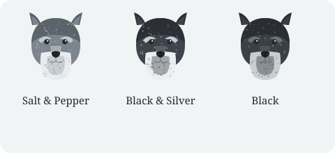

History and Origin
The Miniature Schnauzer was developed in Germany in the late 1800s, bred down from the Standard Schnauzer to create a small, hardworking farm dog that could hunt rats and guard the homestead. The American Kennel Club recognized the breed in 1926 and places it in the Terrier Group.

Breed Standards at a Glance
The breed standard describes the ideal Miniature Schnauzer: a sturdy, squarely built little dog with a wiry coat and an alert, friendly expression.
| Trait | Standard |
|---|---|
| Group | Terrier |
| Height | 12–14 inches (30–36 cm) at the shoulder |
| Weight | 11–20 pounds (5–9 kg) |
| Coat | Double coat — wiry outer coat over a soft undercoat |
| Colors | Salt & pepper, black & silver, solid black |
| Lifespan | 12–15 years |
| Temperament | Alert, friendly, obedient, spirited |
Recognized Coat Colors
- Salt & pepper — the most familiar look, a banded mix of black and white hairs that reads as silver-gray.
- Black & silver — a black body with silver markings on the eyebrows, muzzle, chest, and legs.
- Solid black — an even, deep black coat with no other coloring.
Distinctive Features
- Beard and eyebrows — the breed’s trademark, framing an expressive face.
- Wiry double coat — weather-resistant and low-shedding when maintained.
- Square, compact build — roughly as tall as it is long, giving a balanced outline.
- Alert ears — naturally folded, and sometimes cropped to stand erect.
The coat needs specific care
That wiry double coat gives the breed its color and texture — and it needs regular grooming to stay that way. See the grooming guide →